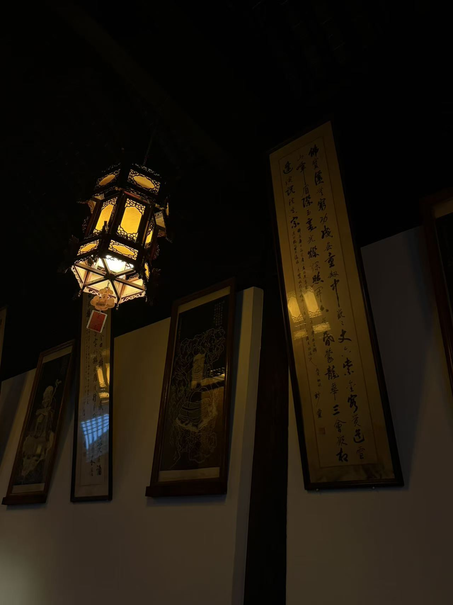

0104
移建现址，木上留年
梁间题记为大殿提供了重要年代线索。
看模型时
1320 是纪年节点；当前形制不能直接等同于元代原貌。
文物建筑 · 单体三维研究上海 · 普陀
一座木构殿堂的形制、修缮与再现
从檐口到柱础，从外部轮廓到内部柱网。慢慢环绕、靠近，再进入殿内，观察一座建筑如何叠合出不同的时间。
沿着屋檐，进入时间真如寺大殿以元延祐七年（1320）题记为重要年代线索。今天所见的单檐形制，也经历过清代改建与20世纪修缮的重新选择。
真时间轴 · 形制切换在同一座殿里观察变化
拖动时间轴查看形制变化。进入殿内观察空间；拆解模式按屋面、木构、柱网与台基分层展开。
梁间题记为大殿提供了重要年代线索。
1320 是纪年节点；当前形制不能直接等同于元代原貌。
模型状态：程序几何 · 非实测复原。清代双檐为研究推定；屋面细部、佛像与构件节点待现场和档案校准。
构件观察 · 点击模型热点一座殿的三维索引
点选屋面、梁架、斗栱、隔扇、柱网或台基，查看来源与模型状态。
公开记载给出单檐／双檐的阶段变化。当前的举架与瓦作细节只是形制表达。
落架大修回顾提到古架测绘与构件复原；若取得图纸，可把节点升级为可量读模型。
资料记载殿内16根柱中有10根为元代柏木柱；旧柱的准确位置仍待核验。
资料记载6个石柱础为元代旧物。模型目前不虚构其具体分布与更换历史。
研究立场把推演留在明处
1960年代的大修选择恢复元代单檐形制。这个选择可以被记录；具体哪些构件被替换、哪些细节依据类比补配，则需要档案和现场证据继续回答。
元延祐七年题记与光绪二十三年重建题记，让两个时间在同一座殿内相遇。
可定位的文字记录公开资料记载，殿内16根柱中有10根为元代柏木柱，6个石柱础为元代旧物。
需要逐件编号与核验恢复某一时期的样貌，会涉及材料、形制与历史层次的取舍。模型把尚未核实的细节留在明处。
需要修缮档案解释当一座建筑经历多次改建，
我们希望哪一段历史更清晰地被看见？
现场笔记 · 由你提供照片是线索，不是模型
以下照片来自项目发起者。它们能帮助建立观察清单，但单张照片不能替代正射影像、构件测绘或修缮记录。


资料目录公开信息 · 第一轮
本原型为研究与表达练习，不代表寺方、文物主管部门或专业修缮单位的官方意见。公开网页信息需要与原始档案及专业人员核对。